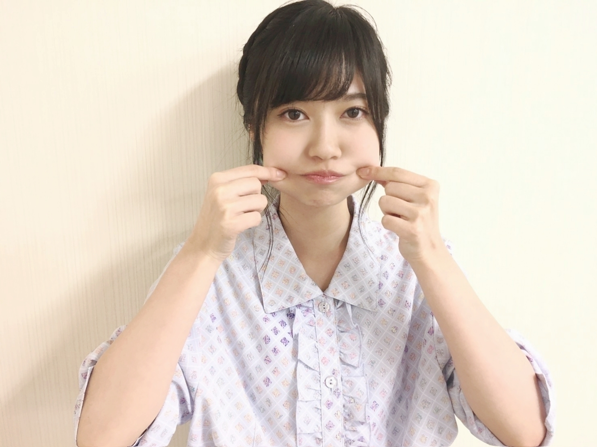
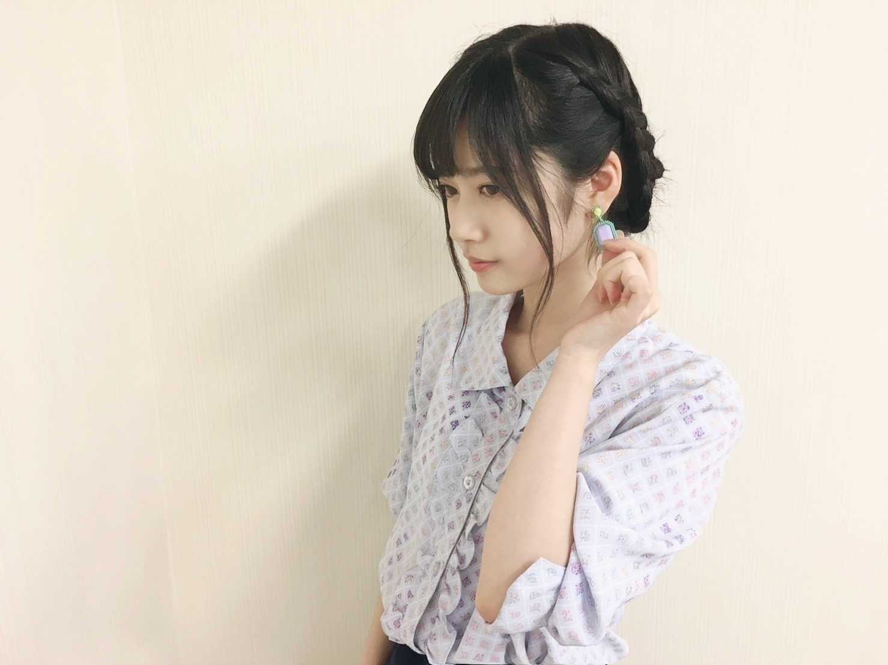
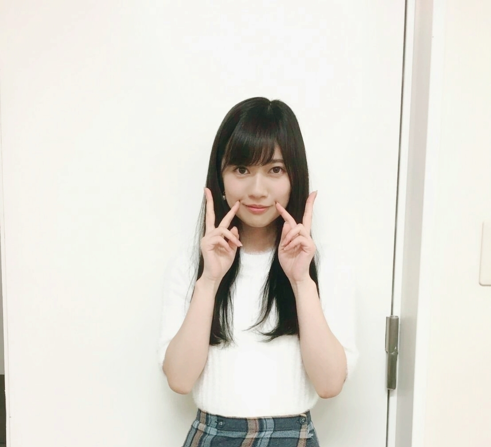
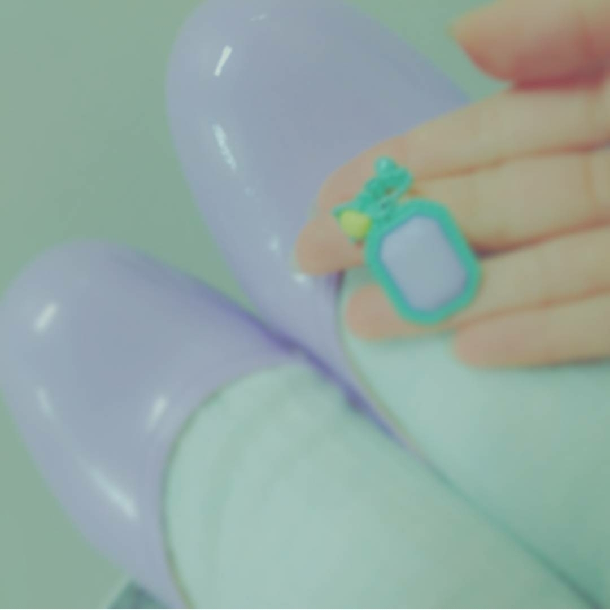

2017/0412Wed魔法のチケット
とある日、メロンパンを1日に2つ食べました
朝ごはんは洋食派
寺田蘭世です
宜しくお願い致します(^^)
普段あんまり食べてる姿は見せたくないのですが
ここ最近、皆にお食事タイムを見られることが増え
すごい食べる人と言う認知をされてしまいました。
量を一気に食べると言うよりかは
常に口の中に食べ物があるのが私のスタイルです
あ、早く生田さんとご飯に行きたい
この前久々に生田さんに会ったからご飯誘いました
生田さんと遊ぶのをモチベーションに生きていきます(..)✨
個別握手会in幕張メッセ◎
心よりありがとうございました✨
17枚目個別握手会が始まりました
今回の印象は
年下が多かったです。
中学生の子とか
同い年くらいの方々が一気に増えててビックリしました。
学校頑張ってね
楽しんでね
部活頑張れー
受験応援してますって
沢山言った気がします！
そして、女性も多かった！
大体私服について話してくれたり
その度、
「お洋服のブランド教えて下さい」
って言って頂くけど
申し訳ない程全部古着でして(..)
私よく着回しするので着回し術とか色使いを
これからも参考にしてもらえると嬉しいな✨
でも、皆が真似してくれたり参考にしてくれているの凄く嬉しいです
インフルエンサーだっ(..)
皆に影響を与えられる様にこれからも自分のスタイルを貫き通し、作り上げていきたいです(..)
いつも来てくれる方は
レーンに入って来てくれるだけでほっこりします✨
心の支え
モチベーションになってます
17枚目インフルエンサーの個別握手会も宜しくお願い致します(..)✨
私服紹介◎
1.2.3.4部


tops：Used
skirt：Used
shoes：？
socks：ＧＵ さん
accessory：claire's さん
トップスは驚きの100円
古着は宝探しです。
イヤリングはおもちゃみたいな質感で
このお洋服のテーマは
レトロ、近所でお買い物。
みたいな感じです。
5部

tops：Vannie TOKYO CASPER JOHN さん
skirt：Used
お洋服の変化に気づいてくれたり
褒めていただけたり
買い物上手ーなんて言われると照れます(..)
次の個別握手会も何を着ようかワクワク考えておきます
好きな曲◎
ディスコソングが好きです
70年代80年代頃が良くて
特に好きな1曲は、、、
Rick Astley さん
Together forever
リックアストリーさんの歌声は本当に本当に素晴らしい
それと80年代ごろの流行りのキーボードサウンド？！
テンポ感はポップだけど
リックアストリーさんの
渋くて
どしっとしっかりした歌声が好きです(..)✨
曲名とか歌手のお名前覚えるのは得意でないけど
曲のイントロ聴けば
大体歌えるって曲がたくさんあります、、、(..)
昔から好きな物がいきて
お仕事に繋がるといいねー
急遽告知◎
21:00〜 ニコニコ生放送「生のアイドルが好き」
告知◎
4月14日（金）
・広島FM「皆実町マルシェ」生放送ゲスト出演（15時10分～15時25分 出演予定）
・広島FM「カウントダウン魂」生放送ゲスト出演（19時35分～20時 出演予定）
広島FM「大窪シゲキの9ジラジ」with 乃木坂46 in アルパーク
4月15日（土）14：00～14：30
会場：アルパーク東棟 2F 時計の広場
広島宜しくお願い致します
ぜひ、寺田蘭世タオルやグッズお持ちの方はぜひ✨
4月6日 Top Yell さん
4月21日 FLASHスペシャル さん
4月29日 BUBKA さん
ニッカンスポーツ・コム
NEWSがとまらんぜ
毎週金曜日配信
小物の色を合わせる
さり気無く統一感

最後まで読んで下さりありがとうございます
では、きっとまた✨
2017/04/12 14:06


コメント(1094)
ありがとう！
広島のラジオ行くよ！
またブログ待ってます！
かっちゃん
今日はコメント早めに書いてみたくわちゃんです(*´∀｀)
何番目かな？(；´∀｀)
個握楽しかったー！
握手会お疲れ様でした、ほんと楽しかった〜^^*
蘭世の春らしい明るい感じの洋服とっっても可愛かったよ！
23日の握手会も一部から行くのでよろしくお願いします<(_"_)>ペコッ
あ、あと今日の生ドルも絶対見みるよ( •̀ω•́ )و
ではでは...
かず←
選抜入りも嬉しかった〜
ブログ更新ありがとう
蘭世握手会お疲れ様
1枚だったけど顔見れてよかったよー
今度は絶対にグレーにしてくる
金髪だったからw
それでは今日はこの辺で
おやすみ蘭世
蘭世のレーンに何回か行ったけど、本当に楽しかったよ！！
私服もめっちゃ爽やかで好きだった！
23日もまた行くからよろしくお願いします！
全国握手会の、大阪時とても楽しかったです！
また、握手会に行きます！
今回はたくさんお話できてよかったです(^^♪
次からどんどん行けなくなってしまうのが残念です…
陰ながら応援しています！
それでは！
可愛いー！
蘭世っぽい服装して京都の個握行こうと思ってるねんけどなかなか思い浮かばなくて思い浮かばなくて(>_<)
楽しみにしてる！！！
握手会ではいつも元気を貰ってます( ･ㅂ･)و ̑̑
古着良きですよ(・∀・)b
自分も頑張ります٩(●˙▽˙●)۶
広島行くよ！まっててね！！
らんぜに会える！！！！
私はらんぜちゃんに会うモチベーションだけで生きてます！
私もよく古着きてる！掘り出し物多いよね！
今日も1日お疲れ様です！
いつかぜったい個握とって会いにいきます！
てらだすきすぎます！！！
これからもがんばってください！！応援してます！
だいすき！
やぁ(｡･ω･)ﾉﾞ親愛なる蘭世
ブログ更新ありがとう！
私服を楽しみにしてたからめっちゃうれしいで
また後でゆっくり読んでコメントするわな！
まずは更新のお礼が言いたかったから
じゃきっとまた後で(｡･ω･)ﾉﾞ
早く握手したい！それだけを楽しみにいま生きています。
昨日お腹壊しました・・・
蘭世も気をつけてっ ではっ！
こんにちはー
個握たのしかったよーー！！！
眼球占い！9日！０点！！！！おどろき！！！
いや逆にこんな数字出るんかい！ってなったわ笑笑笑笑笑笑
また23日お邪魔しまーす( ´ ▽ ` )ﾉ
個握の私服めっちゃ似合ってて生で見れて良きでした
蘭世買い物上手すぎて怖いです
僕も今日古着見て来ました
蘭世の勢いとまらんぜー。
古着でコーディネートしてるっていうお金の安さにびっくり！
ひめたんの次の日俺の誕生日だからぜひ祝ってほしいな！
古着を着こなすのほんと尊敬する！ 自分もそうなりたいから握手会でいろいろ質問させてね！笑
生ドル楽しみにしてるよ！ 応援してます∠( 'ω')／
個握楽しみだよーん
まぁとにかく最高の一言でした笑
5部の私服は生で見れなかったけど、蘭世のモバメのおかげで見ることができました、ほんとありがとうね
ラジらーも楽しみにしてる！
かず←
2部と5部のしか行けませんでしたが、蘭世の顔見られて良かったです
個握の服装ありがとう。１枚目の写真はとってもリーズナブルなんだね、驚き！！
もうね蘭世見るだけで元気出るし蘭世に逢えるのが毎日が楽しみだよ！
早く蘭世に会いたいな
本当蘭世がだーいすきです。
生ドルがんばー
もっともっといっぱい話したかった。
今度名古屋行くから待っててね！
久々に会えたので就活だったけどリフレッシュできました^ ^
次に会いに行けるのはもしかしたら18枚目になっちゃうと思うけど蘭世のモバメとブログで就活頑張ります(..)
お疲れ様ですm(*_ _)m
やっぱり握手でも言った通り5部の髪型めっちゃ好きです(笑)
蘭世はほんとにオシャレだなーって思います。
今頑張って履歴書書いたりしてて、蘭世のブログ読んで一休みできました。
また頑張れそうです。
東京から応援してます。
今日のニコ生の代役MC楽しみにしてるよ！
あと、らじらー単独出演決定おめでとう！
高校卒業して仕事に制限がなくなってとてもよきだね(笑)
こないだの洋服はほとんど古着だったんだね〜
僕も大学生になったし古着に手を出してみようかな(笑)
4/23も握手会よろしくお願いします！
モチベーションにして大学頑張るね！
また更新お願いします！
僕は和食派ですかな〜
蘭世の食べてるところめっちゃ見たい！！！笑
早く握手会行きたいです〜！
一気に口の中に詰め込むタイプの人なのね、俺もだよ笑
親とか弟とかにはリスみたいって言われる(ToT)
握手会行きたかったぁ。。。
ではでは〜〜また更新を待ってます！！
服オシャレ！！生田さんとご飯いったらツーショット上げてね！！！楽しみにしてます〜
幕張ではありがとう(^-^)
蘭世の握手会に行けて本当に良かったって思えた！
赤いサッカーのユニホームはなかなかインパクト強かったんじゃないかなー？っておもってる笑笑
また絶対いくね！！！！(((o(*ﾟ▽ﾟ*)o)))
影響を与えられる人ってほんとすごいと思う！
蘭世って少しネガティヴ思考だから
少しは自分はすごいんだ！って思って欲しいなぁw
でも最近の蘭世は自信に満ち溢れてる感じがして
見ているのが楽しくてしょうがないです！
これからも蘭世らしく、いろんな蘭世を見ていたいです！
広島行きたいよーーー。
代わりに今日の生ドル見ますww
９日の握手会，３にお邪魔しました～
２３日も３部に行くのでよろしくです。
今日のニコ生楽しみにしてるね！
蘭世の勢いとまらんぜ～
コメントする